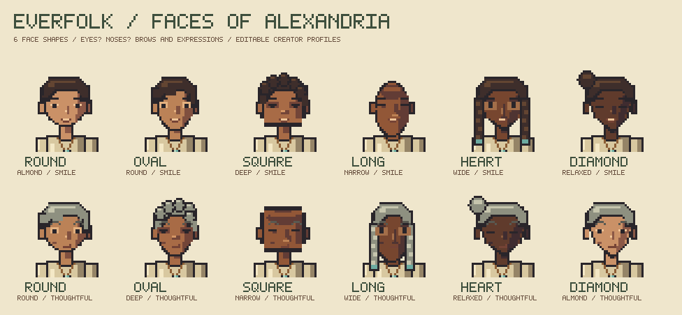

LIVING LEGACIES / ALEXANDRIA
Lives that
leave a legacy.
Four historical figures. Six people of the city.
One pixel art language, a different story for every life.
10 ORIGINAL DESIGNS · 3 VIEWS
TRANSPARENT PNGS + OPENRASTER LAYERS
Rarity frames are artwork previews. This collection does not mint tokens or allocate NFT supply.
FACES OF ALEXANDRIA
Faces of the city.
Six face shapes, six eye styles, and a range of noses, eyebrows and expressions. Every profile can be edited in the character creator.

Download 12 face profiles ↗Made for your next creation.
64 × 96Native sprite · crisp pixels
480 × 640Collectible card · separate layers
3 viewsFront · side · back
12 character layersBody · clothing · hair · props
Portraits are artistic interpretations, not reconstructions of historical appearances. Character designs follow the roles and actions in the Everfolk NFT catalog.